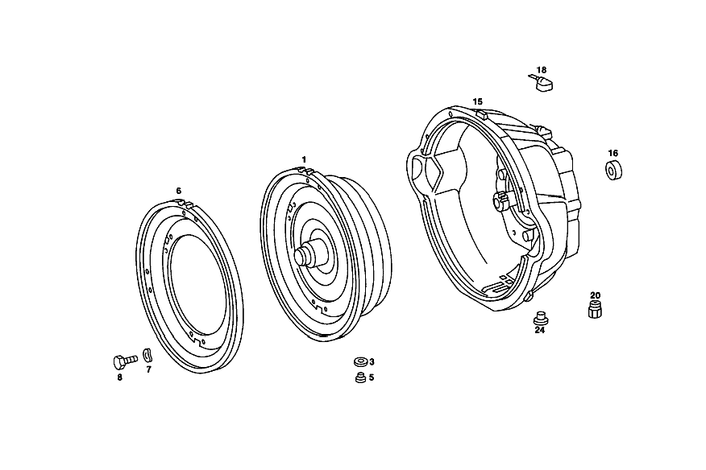

| № | Артикул | Название | Кол. | Примечание | Ограничение |
|---|---|---|---|---|---|
| 1 | A 115 250 13 02 | ГИДР.СЦЕПЛЕНИЕ | 1 | [402] БОЛЬШЕ НЕ ПОСТАВЛЯЕТСЯ | |
| 3 | N 007603 010100 | - Уплотнительное кольцо | 1 | 10X13.5 AL | |
| 5 | N 000908 010000 | - Резьбовая пробка | 1 | M10X1 | |
| 15 | A 115 250 19 05 | КОРПУС | 1 | [402] БОЛЬШЕ НЕ ПОСТАВЛЯЕТСЯ | |
| 16 | A 109 257 01 50 | - втулка | 1 | [001] РЕМОНТ. ИСПОЛНЕНИЕ | |
| 18 | A 115 250 03 57 | - ВЕНТИЛЯЦИЯ | - | ||
| 18 | A 115 250 00 66 | - Вентиляционная трубка | 1 | ||
| 20 | A 115 257 10 57 | - Резьбовое кольцо | 1 | ||
| 24 | N 000908 022010 | - Резьбовая пробка | 2 | ||
| 30 | A 115 270 08 90 | - Корпус | 1 | с PRIMARY PUMP | |
| 31 | A 112 277 43 50 | - втулка | 1 | ||
| 34 | A 008 997 91 46 | - Уплотнительное кольцо | 1 | ||
| 35 | A 115 277 03 14 | - ПЛАСТИНА ПРОМЕЖУТОЧНАЯ | 1 | ||
| 36 | A 004 997 05 48 | - Уплотнительное кольцо | 1 | ||
| 36 | A 004 997 05 48 | - Уплотнительное кольцо | 1 | ||
| 37 | N 000931 008046 | - Винт | - | ||
| 37 | N 304017 008018 | - Винт с 6-гранной головкой | 4 | M8X35 | |
| 38 | N 000137 008204 | - Пружинная шайба | - | ||
| 38 | N 000137 008212 | - Пружинная шайба | 4 | ||
| 39 | N 000625 016008 | - Шарикоподшипник | 1 | [402] БОЛЬШЕ НЕ ПОСТАВЛЯЕТСЯ | |
| 40 | A 115 270 21 50 | - втулка | 1 | ||
| 40P | A 115 272 06 55 | - УПЛОТНИТ. КОЛЬЦО | - | ||
| 40P | A 316 272 04 55 | - Уплотнительное кольцо | 4 | [402] БОЛЬШЕ НЕ ПОСТАВЛЯЕТСЯ | |
| 41 | A 115 272 07 92 | - Резиновый наконечник | 1 | ||
| 45 | A 115 270 86 20 | - ФЛАНЕЦ | 1 | ||
| 46 | A 115 272 14 92 | - Уплотнительное кольцо | 1 | ||
| 47 | A 115 272 12 92 | - МАНЖЕТА | - | [414] СТАРУЮ ДЕТАЛЬ УСТАНАВЛИВАТЬ БОЛЬШЕ НЕ РАЗРЕШАЕТСЯ | |
| 47 | A 316 272 07 92 | - Манжета | 1 | ||
| 50 | A 115 272 02 31 | - ПОРШЕНЬ | 1 | LESS BALL VALVE [402] БОЛЬШЕ НЕ ПОСТАВЛЯЕТСЯ | |
| 51 | A 115 993 52 01 | - пружина | 28 | ||
| 52 | A 115 270 04 41 | - Тарелка пружины | 1 | ||
| 53 | A 115 994 08 35 | - Пруж. стопорное кольцо | 1 | ||
| 55 | A 115 272 14 07 | - СОЛНЕЧНАЯ ШЕСТЕРНЯ | - | [402] БОЛЬШЕ НЕ ПОСТАВЛЯЕТСЯ [024] ПО ОТДЕЛЬНОСТИ БОЛЬШЕ НЕ ПОСТАВЛЯЕТСЯ [095] INSTAED CENTRAL PLANETARY GEAR TRAIN | |
| 56 | A 000 994 14 40 | - Пруж. стопорное кольцо | 1 | ||
| 59 | A 006 981 42 10 | - ПОДШИПНИК ИГОЛЬЧАТЫЙ | 1 | ||
| 63 | A 112 272 02 25 | Диск | 3 | 2.4 MM | |
| 64 | A 109 272 15 26 | - Диск | 1 | 2.0 MM | |
| 68 | A 109 272 19 26 | - Диск | 1 | 5.0 MM | |
| 69 | A 109 272 23 26 | Диск | 2 | 5.0 MM | |
| 70 | A 115 272 12 73 | - Кольцо | 1 | 153 MM | |
| 78 | A 115 270 60 43 | - ВОДИЛО ПЛАНЕТ. ПЕРЕДАЧИ | 1 | [018] UP TO TRANSMISSION: 200 007560 202 003350 203 029328 204 002110 205 048065 206 034425 | |
| 78 | A 115 270 61 43 | - ВОДИЛО ПЛАНЕТ. ПЕРЕДАЧИ | 1 | [021] FROM TRANSMISSION: 200 007561 202 003351 203 029329 204 002111 205 048066 206 034426 | |
| 85 | A 004 981 21 10 | - ПОДШИПНИК ИГОЛЬЧАТЫЙ | - | ||
| 85 | A 000 981 14 11 | - Игольчатый подшипник | 1 | ||
| 86 | A 115 272 49 62 | - Диск | 1 | ||
| 87 | A 115 272 10 08 | - ЭПИЦИКЛ. ШЕСТЕРНЯ | - | [402] БОЛЬШЕ НЕ ПОСТАВЛЯЕТСЯ [024] ПО ОТДЕЛЬНОСТИ БОЛЬШЕ НЕ ПОСТАВЛЯЕТСЯ | |
| 88 | A 109 272 00 08 | - ЭПИЦИКЛ. ШЕСТЕРНЯ | - | [402] БОЛЬШЕ НЕ ПОСТАВЛЯЕТСЯ [024] ПО ОТДЕЛЬНОСТИ БОЛЬШЕ НЕ ПОСТАВЛЯЕТСЯ | |
| 89 | A 115 272 02 73 | - Кольцо | 2 | 130 MM [018] UP TO TRANSMISSION: 200 007560 202 003350 203 029328 204 002110 205 048065 206 034425 | |
| 89 | A 115 272 02 73 | Кольцо | 1 | 130 MM [021] FROM TRANSMISSION: 200 007561 202 003351 203 029329 204 002111 205 048066 206 034426 | |
| 92 | A 112 994 07 35 | - Пруж. стопорное кольцо | 1 | 125 MM [021] FROM TRANSMISSION: 200 007561 202 003351 203 029329 204 002111 205 048066 206 034426 | |
| 93 | A 115 272 34 62 | - Упорная шайба | 1 | ||
| 94 | A 115 271 17 52 | - Компенсационная шайба | 1 | ПО НЕОБХОДИМОСТИ 0.1 MM | |
| 96 | A 115 271 21 52 | - Компенсационная шайба | 1 | ПО НЕОБХОДИМОСТИ 0.1 MM | |
| 97 | A 115 272 33 62 | - Упорная шайба | 1 | ||
| 105 | A 115 270 56 43 | - ВОДИЛО ПЛАНЕТ. ПЕРЕДАЧИ | 1 | [018] UP TO TRANSMISSION: 200 007560 202 003350 203 029328 204 002110 205 048065 206 034425 | |
| 105 | A 115 270 57 43 | - ВОДИЛО ПЛАНЕТ. ПЕРЕДАЧИ | 1 | [402] БОЛЬШЕ НЕ ПОСТАВЛЯЕТСЯ [021] FROM TRANSMISSION: 200 007561 202 003351 203 029329 204 002111 205 048066 206 034426 | |
| 115 | A 115 270 59 25 | - ПРИВОДНОЙ ВАЛ | 1 | ||
| 118 | A 115 272 11 55 | Уплотнительное кольцо | 1 | 3.0 MM | |
| 119 | A 115 272 04 73 | - Кольцо | 1 | ||
| 120 | A 115 272 29 45 | - ФЛАНЕЦ | 1 | ||
| 122 | A 115 272 09 31 | - ПОРШЕНЬ | 1 | [402] БОЛЬШЕ НЕ ПОСТАВЛЯЕТСЯ | |
| 125 | A 115 272 06 92 | - Уплотнительное кольцо | 1 | ||
| 126 | A 115 272 50 24 | - ОБОЙМА ФРИКЦ. ДИСКОВ | 1 | [402] БОЛЬШЕ НЕ ПОСТАВЛЯЕТСЯ | |
| 127 | A 115 272 04 73 | - Кольцо | 1 | 156 MM | |
| 128 | A 112 272 02 25 | Диск | 2 | 2.4 MM | |
| 136 | A 109 272 15 26 | - Диск | 1 | 2.0 MM | |
| 144 | A 115 272 13 73 | - Кольцо | 1 | ||
| 145 | A 002 981 31 10 | - Игольчатый подшипник | 1 | [402] БОЛЬШЕ НЕ ПОСТАВЛЯЕТСЯ | |
| 146 | A 115 993 53 01 | - ПРУЖИНА | 28 | [402] БОЛЬШЕ НЕ ПОСТАВЛЯЕТСЯ | |
| 150 | A 112 272 14 62 | - Диск | NB | 0.6 MM | |
| 153 | A 115 270 56 25 | - ПРИВОДНОЙ ВАЛ | 1 | ||
| 154 | A 002 981 32 10 | - Сепаратор иг. подшипника | 1 | ||
| 155 | A 115 272 34 62 | - Упорная шайба | 1 | ||
| 156 | A 112 994 07 35 | - Пруж. стопорное кольцо | 1 | ||
| 157 | A 115 272 02 73 | - Кольцо | 1 | ||
| 158 | A 002 994 26 41 | - Стопорное кольцо | 1 | ||
| 159 | A 005 981 81 10 | - Сепаратор иг. подшипника | 1 | ||
| 160 | A 002 981 30 10 | - Игольчатый подшипник | 1 | ||
| 170 | A 115 270 55 25 | - ПРИВОДНОЙ ВАЛ | 1 | ||
| 175 | A 115 270 47 43 | - ВОДИЛО ПЛАНЕТ. ПЕРЕДАЧИ | 1 | ||
| 180 | A 007 981 39 10 | - Игольчатый подшипник | 1 | ||
| 182 | A 004 981 40 10 | - Сепаратор иг. подшипника | 1 | ||
| 183 | A 115 272 37 62 | - Упорная шайба | 1 | ||
| 184 | A 001 981 18 25 | - Рад. шарикоподшипник | 1 | ||
| 185 | A 115 272 49 62 | - Диск | 1 | ||
| 190 | A 115 272 45 62 | - Упорная шайба | 1 | ||
| 195 | A 115 272 24 45 | - Опорный фланец | 1 | ||
| 197 | N 007987 006108 | - БОЛТ | 3 | ||
| 198 | A 115 271 13 52 | - Компенсационная шайба | 1 | ПО НЕОБХОДИМОСТИ 0.1 MM | |
| 200 | A 000 304 07 90 | - ПЕРЕКЛ.МАГНИТ | 1 | (МАГНИТ. КАТУШКА) | |
| 201 | A 000 304 06 90 | - ПЕРЕКЛ.МАГНИТ | - | ||
| 201 | A 000 304 05 90 | - ПЕРЕКЛ.МАГНИТ | 1 | (РАМА МАГНИТА) | |
| 202 | A 010 997 77 45 | - Уплотнительное кольцо | 1 | ||
| 203 | A 007 997 96 45 | - Уплотнительное кольцо | 1 | ||
| 204 | A 007 997 80 45 | - Уплотнительное кольцо | 1 | ||
| 205 | A 115 304 01 60 | - Уплотнительное кольцо | 1 | ||
| 210 | A 115 270 77 11 | - КОРПУС КП | 1 | ||
| 213 | A 115 997 06 30 | - Резьбовая пробка | 1 | ||
| 214 | N 007603 008105 | - Уплотнительное кольцо | 1 | ||
| 215 | A 006 997 61 46 | - Уплотнительное кольцо | 2 | ||
| 220 | A 115 272 11 92 | - Уплотнительное кольцо | 1 | ||
| 221 | A 110 997 03 30 | - Резьбовая пробка | 1 | ||
| 222 | N 007603 012104 | - Уплотнительное кольцо | 1 | ||
| 223 | A 115 270 08 68 | - НАПРАВЛ. ТРУБКА | 1 | [035] AGAINST SQUEALING OF TRANSMISSION | |
| 226 | A 115 277 15 40 | - Держатель | 1 | ||
| 228 | A 115 277 07 05 | КОРПУС | 1 | ||
| 229 | A 115 993 20 10 | - пружина | 2 | [402] БОЛЬШЕ НЕ ПОСТАВЛЯЕТСЯ | |
| 230 | N 000931 006115 | - Винт | - | ||
| 230 | N 000933 006151 | - Винт | 3 | ||
| 231 | N 000137 006204 | - Пружинная шайба | 3 | ||
| 233 | A 000 545 33 06 | - Переключатель | 1 | ||
| 235 | A 115 997 07 40 | - Уплотнительное кольцо | 1 | ||
| 236 | N 000137 005203 | - Пружинная шайба | 3 | ||
| 237 | N 000084 005174 | - Винт | 3 | ||
| 243 | A 115 278 16 20 | - РЫЧАГ | 1 | ||
| 250 | A 115 278 09 10 | - ВАЛ РЕГУЛЯТОРА | 1 | [402] БОЛЬШЕ НЕ ПОСТАВЛЯЕТСЯ | |
| 251 | A 115 278 09 50 | - втулка | 1 | ||
| 252 | A 115 278 01 53 | - РАСПОРН. ТРУБКА | 1 | [402] БОЛЬШЕ НЕ ПОСТАВЛЯЕТСЯ | |
| 253 | A 004 997 37 45 | - Уплотнительное кольцо | 1 | ||
| 258 | N 000084 004139 | - Винт | 1 | ||
| 259 | N 009021 004202 | - Шайба | - | ||
| 259 | A 094 990 63 08 | - Шайба | 1 | ||
| 260 | N 000137 004202 | - Пружинная шайба | 1 | ||
| 270 | A 115 270 04 57 | - Пластина фиксации сел.АКП | 1 | [041] FROM TRANSMISSION 200 012461 202 005851 203 034744 204 004011 205 053116 206 038426 | |
| 273 | N 006912 006006 | - Винт | 1 | ||
| 274 | N 000137 006204 | - Пружинная шайба | 1 | ||
| 280 | A 109 270 10 89 | - Нажимной элемент | 1 | B 1 [047] UP TO TRANSMISSION 202 005000 203 033078 204 003410 205 051115 206 037075 | |
| 280 | A 116 270 03 89 | - Нажимной элемент | 1 | B 1 [049] FROM TRANSMISSION 202 005001 203 033079 204 003411 205 051116 206 037076 | |
| 285 | A 109 270 11 89 | - Нажимной элемент | 1 | B 2 | |
| 288 | A 126 277 11 58 | - Крепление упл. кольца | - | [414] СТАРУЮ ДЕТАЛЬ УСТАНАВЛИВАТЬ БОЛЬШЕ НЕ РАЗРЕШАЕТСЯ | |
| 288 | A 140 277 01 51 | - Проставочное кольцо | 2 | [057] FROM TRANSMISSION 200 010761 202 004801 203 032779 204 003411 205 050916 206 037076 | |
| 290 | A 005 997 16 45 | Уплотнительное кольцо | 2 | ||
| 291 | A 115 993 00 22 | - пружина | 1 | [402] БОЛЬШЕ НЕ ПОСТАВЛЯЕТСЯ | |
| 292 | A 109 277 01 75 | - Нажимной штифт | 2 | ПО НЕОБХОДИМОСТИ 22 MM [053] UP TO TRANSMISSION 200 010760 202 004800 203 032778 204 003410 205 050915 206 037075 | |
| 295 | A 115 277 02 74 | - Палец | 1 | ||
| 296 | A 115 277 04 24 | - РЫЧАГ | 1 | ||
| 299 | A 115 277 53 75 | - Нажимной штифт | 2 | ||
| 300 | A 115 993 02 25 | - пружина | 1 | ||
| 301 | A 115 277 17 71 | - болт | 1 | ||
| 302 | A 115 990 04 51 | - гайка | 1 | ||
| 316 | A 115 270 61 32 | - Поршень | 1 | ||
| 321 | A 115 272 08 92 | - Уплотнительное кольцо | 1 | ||
| 322 | A 115 993 09 02 | - ПРУЖИНА | - | [402] БОЛЬШЕ НЕ ПОСТАВЛЯЕТСЯ | |
| 323 | A 115 277 48 75 | - ШТИФТ | - | [402] БОЛЬШЕ НЕ ПОСТАВЛЯЕТСЯ | |
| 324 | A 115 994 17 35 | - Пруж. стопорное кольцо | 1 | ||
| 325 | A 115 993 18 05 | - пружина | 1 | [402] БОЛЬШЕ НЕ ПОСТАВЛЯЕТСЯ | |
| 330 | A 115 277 16 03 | - КРЫШКА | 1 | [402] БОЛЬШЕ НЕ ПОСТАВЛЯЕТСЯ | |
| 335 | A 008 997 35 45 | - Уплотнительное кольцо | 1 | ||
| 336 | A 115 994 04 35 | - Пруж. стопорное кольцо | 1 | ||
| 344 | A 115 270 06 59 | - РЫЧАГ | 1 | ||
| 348 | A 115 990 17 40 | - Диск | 1 | ||
| 349 | N 006799 009002 | - Стопорная шайба | 1 | ||
| 355 | A 115 270 08 59 | - Рычаг | 1 | ||
| 356 | N 000933 006123 | - Винт | 1 | ||
| 357 | N 000137 006204 | - Пружинная шайба | 2 | ||
| 358 | N 000934 006013 | - Гайка | - | ||
| 358 | N 304032 006008 | - Шестигранная гайка | 1 | ||
| 360 | A 116 270 03 62 | - ЛЕНТА ТОРМОЗНАЯ | - | ||
| 360 | A 116 270 17 62 | - Тормозная лента | 1 | ПЕРЕДАЧА ЗАДНЕГО ХОДА | |
| 363 | A 115 993 55 03 | пружина | 1 | [402] БОЛЬШЕ НЕ ПОСТАВЛЯЕТСЯ | |
| 364 | A 115 993 54 03 | пружина | 1 | [402] БОЛЬШЕ НЕ ПОСТАВЛЯЕТСЯ | |
| 366 | A 115 270 59 32 | ПОРШЕНЬ | 1 | B1 | |
| 370 | A 115 272 03 92 | - Уплотнительное кольцо | 1 | ||
| 382 | A 007 997 80 45 | Уплотнительное кольцо | 1 | ||
| 398 | A 115 277 19 03 | КРЫШКА | 1 | ||
| 400 | A 010 997 59 45 | - Уплотнительное кольцо | 1 | ||
| 402 | A 115 994 14 35 | - Пруж. стопорное кольцо | 1 | ||
| 425 | A 115 270 55 32 | - ПОРШЕНЬ | 1 | ||
| 428 | A 115 277 02 55 | - Уплотнительное кольцо | 1 | ||
| 430 | A 008 997 35 45 | - Уплотнительное кольцо | 1 | ||
| 432 | A 115 993 23 05 | - пружина | 1 | [402] БОЛЬШЕ НЕ ПОСТАВЛЯЕТСЯ [061] FROM TRANSMISSION 200 005081 202 001965 203 027279 204 001311 205 048866 206 035251 | |
| 433 | A 115 277 16 03 | - КРЫШКА | 1 | [402] БОЛЬШЕ НЕ ПОСТАВЛЯЕТСЯ | |
| 434 | A 115 994 04 35 | - Пруж. стопорное кольцо | 1 | ||
| 436 | A 115 270 59 62 | - ЛЕНТА ТОРМОЗНАЯ | - | ||
| 436 | A 115 270 73 62 | - Тормозная лента | 1 | B 2 | |
| 440 | A 115 270 58 62 | - ЛЕНТА ТОРМОЗНАЯ | - | ||
| 440 | A 115 270 70 62 | - ЛЕНТА ТОРМОЗНАЯ | 1 | ||
| 445 | N 000137 008204 | - Пружинная шайба | - | ||
| 445 | N 000137 008212 | - Пружинная шайба | 11 | ||
| 446 | N 000931 008244 | - Винт | 11 | ||
| 448 | A 115 277 26 80 | - ПРОКЛАДКА УПЛОТНИТЕЛЬНАЯ | - | ||
| 448 | A 115 277 33 80 | - Уплотнение | 1 | ||
| 452 | A 115 272 01 17 | - Шестерня | - | ||
| 452 | A 722 272 00 17 | - ШЕСТЕРНЯ | 1 | [402] БОЛЬШЕ НЕ ПОСТАВЛЯЕТСЯ | |
| 455 | A 115 278 07 74 | - Палец | 1 | ||
| 456 | A 000 994 42 41 | - Стопорное кольцо | 1 | ||
| 457 | A 115 993 02 22 | - пружина | 1 | ||
| 458 | A 115 278 02 21 | - Собачка | 1 | ||
| 460 | A 115 270 10 65 | - ТЯГИ | - | [415] ПРИМЕЧ. ПО ЗАМЕНЕ ПРИМЕНИМО ТОЛЬКО ДЛЯ СТОЯЩИХ РЯДОМ ПОЗИЦИЙ | |
| 460 | A 115 270 06 65 | - Тяга | 1 | ||
| 461 | A 115 278 05 17 | - Ролик | 1 | ||
| 464 | A 115 278 08 74 | - Палец | 1 | ||
| 465 | A 115 278 00 62 | - Упорная шайба | 1 | ||
| 466 | A 000 981 51 87 | - Игла подшипника | 23 | ||
| 467 | A 115 278 04 17 | - Ролик | 1 | ||
| 468 | A 094 990 61 07 | - Стопорная шайба | 1 | ||
| 470 | A 115 990 21 40 | - ШАЙБА | 1 | ||
| 472 | A 115 270 04 78 | - Листовая рессора | 1 | ||
| 473 | A 115 278 04 40 | - Держатель | 1 | ||
| 474 | N 000137 006204 | - Пружинная шайба | 1 | ||
| 475 | N 000933 006183 | - БОЛТ | - | ||
| 475 | N 304017 006016 | - Винт с 6-гранной головкой | 1 | M6X16 | |
| 480 | A 115 270 19 74 | - РЕГУЛЯТОР | 1 | ||
| 484 | A 115 272 03 55 | - УПЛОТНИТ. КОЛЬЦО | 3 | ||
| 484 | A 115 272 13 55 | - Уплотнительное кольцо | 3 | ||
| 485 | A 115 270 00 98 | - Масляный фильтр | 1 | ||
| 486 | A 115 277 08 58 | - Эксцентриковая шайба | 1 | ||
| 487 | A 115 270 03 42 | - Ведущее колесо | 1 | ||
| 488 | A 115 993 04 26 | - Тарельчатая пружина | 1 | ||
| 495 | A 123 270 17 11 | - Корпус коробки передач | 1 | [061] FROM TRANSMISSION 200 005081 202 001965 203 027279 204 001311 205 048866 206 035251 | |
| 496 | A 115 991 02 41 | - РАЗГРУЗ.ВТУЛКА | - | [402] БОЛЬШЕ НЕ ПОСТАВЛЯЕТСЯ | |
| 498 | N 000007 012219 | - Цилиндрический штифт | 1 | ||
| 500 | A 094 990 46 07 | - Шар | 2 | 6 MM; 6,0 MM | |
| 501 | N 005401 308000 | - Шар | 2 | 8 MM | |
| 505 | A 115 997 01 03 | - Пробка | 1 | ||
| 506 | A 115 997 03 03 | - Пробка | 1 | ||
| 510 | A 115 993 38 03 | - Нажимная пружина | 1 | ||
| 511 | A 115 277 62 75 | - Нажимной штифт | 1 | ||
| 512 | A 000 981 81 85 | - Шар | 1 | ||
| 513 | A 115 997 01 30 | - ЗАГЛУШКА РЕЗЬБОВАЯ | 1 | [402] БОЛЬШЕ НЕ ПОСТАВЛЯЕТСЯ | |
| 514 | N 007603 010100 | - Уплотнительное кольцо | 1 | 10X13.5 AL | |
| 528 | N 007603 012104 | - Уплотнительное кольцо | 1 | ||
| 529 | N 007604 012102 | - Резьбовая пробка | 1 | ||
| 529 | N 007604 012105 | - Резьбовая пробка | 1 | M12X1,5 | |
| 535 | N 007603 008105 | - Уплотнительное кольцо | 2 | ||
| 536 | A 115 997 06 30 | - Резьбовая пробка | 2 | ||
| 540 | A 114 991 01 29 | - Шар | 1 | ||
| 541 | A 115 993 13 02 | - пружина | 1 | [402] БОЛЬШЕ НЕ ПОСТАВЛЯЕТСЯ | |
| 542 | N 007603 018100 | - Уплотнительное кольцо | 1 | ||
| 543 | A 115 997 03 30 | - Резьбовая пробка | 1 | ||
| 545 | A 115 270 51 32 | - Поршень | 1 | ||
| 548 | A 115 277 16 71 | - болт | 1 | ||
| 549 | N 000137 006204 | - Пружинная шайба | 1 | ||
| 552 | N 000625 900201 | - Шарикоподшипник | 1 | ||
| 553 | N 000472 062000 | - Стопорное кольцо | - | ||
| 553 | A 003 994 52 41 | - предохранитель | 1 | ||
| 554 | A 008 997 92 46 | - Сальник | 1 | ||
| 554 | A 012 997 87 47 | - Уплотнительное кольцо | 1 | ||
| 560 | A 115 993 34 04 | - пружина | 1 | [402] БОЛЬШЕ НЕ ПОСТАВЛЯЕТСЯ | |
| 561 | A 115 277 41 31 | - Поршень | 1 | ||
| 562 | A 115 277 27 40 | - ДЕРЖАТЕЛЬ | 1 | ||
| 563 | N 914026 005109 | - Винт с неспадающей шайбой | - | ||
| 563 | N 007985 005541 | - Винт | - | ||
| 563 | N 007985 005504 | - Винт | 1 | M5X12 | |
| 568 | A 109 271 00 80 | - ПРОКЛАДКА УПЛОТНИТЕЛЬНАЯ | - | ||
| 568 | A 109 271 01 80 | - уплотнение | 1 | ||
| 568 | A 115 271 14 80 | - ПРОКЛАДКА УПЛОТНИТЕЛЬНАЯ | - | ||
| 570 | N 000137 008204 | - Пружинная шайба | - | ||
| 570 | N 000137 008212 | - Пружинная шайба | 10 | ||
| 571 | N 000931 008046 | - Винт | - | ||
| 571 | N 304017 008018 | - Винт с 6-гранной головкой | 10 | M8X35 | |
| 575 | A 115 277 22 03 | - КРЫШКА | 1 | [065] UP TO TRANSMISSION 200 005080 202 001964 203 027278 204 001310 205 048865 206 035250 | |
| 576 | A 115 993 01 03 | - Нажимная пружина | 1 | [065] UP TO TRANSMISSION 200 005080 202 001964 203 027278 204 001310 205 048865 206 035250 | |
| 577 | A 115 993 02 03 | - ПРУЖИНА | 1 | [402] БОЛЬШЕ НЕ ПОСТАВЛЯЕТСЯ [065] UP TO TRANSMISSION 200 005080 202 001964 203 027278 204 001310 205 048865 206 035250 | |
| 578 | A 115 277 47 38 | - ПОРШЕНЬ | 1 | [065] UP TO TRANSMISSION 200 005080 202 001964 203 027278 204 001310 205 048865 206 035250 | |
| 579 | A 115 277 50 38 | - Поршень | 1 | [061] FROM TRANSMISSION 200 005081 202 001965 203 027279 204 001311 205 048866 206 035251 | |
| 580 | A 115 993 05 04 | - пружина | 1 | [402] БОЛЬШЕ НЕ ПОСТАВЛЯЕТСЯ [061] FROM TRANSMISSION 200 005081 202 001965 203 027279 204 001311 205 048866 206 035251 | |
| 586 | A 000 270 01 79 | - Вакуумная камера | 1 | ||
| 587 | A 115 277 29 75 | - Нажимной штифт | 1 | ПО НЕОБХОДИМОСТИ 39.65 MM | |
| 589 | A 115 993 84 02 | - пружина | 1 | [402] БОЛЬШЕ НЕ ПОСТАВЛЯЕТСЯ | |
| 602 | A 115 270 03 27 | - Ведущее колесо | 1 | ||
| 603 | A 115 274 06 28 | - Корпус | 1 | ||
| 604 | A 005 997 52 45 | - Уплотнительное кольцо | 1 | ||
| 608 | A 115 274 00 60 | - УПЛОТНИТ. КОЛЬЦО | 1 | [402] БОЛЬШЕ НЕ ПОСТАВЛЯЕТСЯ | |
| 608 | A 007 997 73 46 | - Уплотнительное кольцо | 1 | ||
| 610 | A 115 990 39 01 | - БОЛТ | 1 | ||
| 611 | N 000137 006204 | - Пружинная шайба | 1 | ||
| 613 | N 007603 016401 | - Уплотнительное кольцо | 1 | TO PLUG MODULATOR VALVE | |
| 614 | A 115 270 06 72 | - Пробка | 1 | ||
| 615 | A 006 997 41 45 | - Уплотнительное кольцо | - | ||
| 615 | A 007 997 14 48 | - Уплотнительное кольцо | - | ||
| 615 | A 018 997 19 48 | - Кольцевая прокладка | 1 | ||
| 619 | A 115 262 11 45 | - Фланец | 1 | ||
| 620 | A 123 990 00 60 | - гайка | 1 | ||
| 625 | A 116 272 00 76 | - Диск | 1 | ||
| 634 | A 115 277 20 01 | - КОРПУС ЗОЛОТНИКА | - | [402] БОЛЬШЕ НЕ ПОСТАВЛЯЕТСЯ | |
| 635 | A 115 277 28 36 | - Тарелка клапана | 1 | ||
| 636 | A 115 993 15 05 | - пружина | 2 | ||
| 637 | A 115 277 26 36 | - Тарелка клапана | 1 | ||
| 638 | A 109 993 17 01 | - Нажимная пружина | 1 | ||
| 639 | A 115 277 11 14 | - ПЛАСТИНА ПРОМЕЖУТОЧНАЯ | 1 | ||
| 640 | A 100 277 08 80 | - ПРОКЛАДКА УПЛОТНИТЕЛЬНАЯ | 1 | [402] БОЛЬШЕ НЕ ПОСТАВЛЯЕТСЯ | |
| 642 | A 115 277 08 83 | - ЩИТОК ЗАКРЫВ. | 1 | [402] БОЛЬШЕ НЕ ПОСТАВЛЯЕТСЯ | |
| 643 | A 115 277 12 80 | - ПРОКЛАДКА УПЛОТНИТЕЛЬНАЯ | - | ||
| 643 | A 115 277 32 80 | - Уплотнение | 1 | ||
| 645 | N 005401 305500 | - Шар | 2 | ||
| 646 | A 115 277 10 36 | - ДЕТАЛЬ КЛАПАНА | 1 | [402] БОЛЬШЕ НЕ ПОСТАВЛЯЕТСЯ | |
| 648 | A 115 270 01 98 | - ФИЛЬТР | 1 | ||
| 655 | A 116 277 00 83 | - ЩИТОК ЗАКРЫВ. | 1 | [402] БОЛЬШЕ НЕ ПОСТАВЛЯЕТСЯ | |
| 656 | A 116 277 01 83 | - ЩИТОК ЗАКРЫВ. | 1 | [402] БОЛЬШЕ НЕ ПОСТАВЛЯЕТСЯ | |
| 657 | A 115 277 12 40 | - ДЕРЖАТЕЛЬ | 1 | ||
| 658 | A 094 990 26 05 | - Винт | 8 | ||
| 660 | A 115 277 40 29 | - Переключающий золотник | 1 | ||
| 661 | A 116 993 70 01 | - пружина | 2 | ||
| 662 | A 115 277 79 31 | - ПОРШЕНЬ | 1 | [402] БОЛЬШЕ НЕ ПОСТАВЛЯЕТСЯ | |
| 663 | A 115 993 52 03 | - ПРУЖИНА | 1 | [402] БОЛЬШЕ НЕ ПОСТАВЛЯЕТСЯ | |
| 664 | N 005401 305500 | - Шар | 5 | ||
| 665 | A 115 991 01 60 | - ШТИФТ | 1 | ||
| 666 | A 115 277 25 36 | - Тарелка клапана | 1 | ||
| 667 | A 115 993 28 02 | - пружина | 1 | [402] БОЛЬШЕ НЕ ПОСТАВЛЯЕТСЯ | |
| 670 | A 115 277 17 14 | - ПЛАСТИНА ПРОМЕЖУТОЧНАЯ | 1 | [402] БОЛЬШЕ НЕ ПОСТАВЛЯЕТСЯ | |
| 672 | A 115 277 11 83 | - ЩИТОК ЗАКРЫВ. | 1 | [402] БОЛЬШЕ НЕ ПОСТАВЛЯЕТСЯ | |
| 673 | A 115 277 28 80 | уплотнение | 1 | ||
| 674 | A 094 990 26 05 | - Винт | 3 | ||
| 675 | A 115 277 06 74 | - БОЛТ | 6 | [402] БОЛЬШЕ НЕ ПОСТАВЛЯЕТСЯ | |
| 676 | A 115 277 06 73 | - предохранитель | 6 | ||
| 678 | N 005401 305500 | - Шар | 1 | ||
| 679 | A 115 993 97 03 | - пружина | 1 | [402] БОЛЬШЕ НЕ ПОСТАВЛЯЕТСЯ | |
| 683 | A 114 991 02 29 | - Шар | 2 | [402] БОЛЬШЕ НЕ ПОСТАВЛЯЕТСЯ | |
| 685 | N 000931 006191 | - Винт | 10 | ||
| 685 | N 304017 006029 | - Винт с 6-гранной головкой | 10 | M6X55 | |
| 686 | N 000931 006055 | - Винт | 2 | ||
| 687 | N 000137 006204 | - Пружинная шайба | 12 | ||
| 688 | N 900421 006001 | - Резьбовая вставка | NB | ||
| 692 | A 115 270 10 68 | - Вставная трубка | 2 | ||
| 693 | A 115 277 33 50 | - втулка | 4 | ||
| 695 | N 000933 008153 | - Винт | - | M8X25\-8.8 | |
| 695 | N 304017 008034 | - Винт с 6-гранной головкой | 5 | M8X25 | |
| 696 | N 000933 008152 | - Винт | - | ||
| 696 | N 304017 008027 | - Винт с 6-гранной головкой | 6 | ||
| 697 | N 000137 008204 | - Пружинная шайба | - | ||
| 697 | N 000137 008212 | - Пружинная шайба | 11 | ||
| 703 | N 000084 005132 | - Винт | 2 | ||
| 704 | N 000137 005203 | - Пружинная шайба | 2 | ||
| 710 | A 115 270 00 12 | - Поддон масляный | 1 | ||
| 711 | A 115 271 15 80 | - ПРОКЛАДКА УПЛОТНИТЕЛЬНАЯ | 1 | ||
| 711 | A 115 271 16 80 | - Уплотнение | 1 | ||
| 713 | A 115 271 01 94 | - Прокладка | 4 | ||
| 714 | N 000933 008153 | - Винт | - | M8X25\-8.8 | |
| 714 | N 304017 008034 | - Винт с 6-гранной головкой | 4 | M8X25 | |
| 718 | A 115 270 01 80 | КОМПЛЕКТ УПЛОТНЕНИЙ | - | ||
| 718 | A 115 270 21 01 | набор уплотнений | 1 | КОРПУС ЗОЛОТНИКОВ ПЕРЕКЛЮЧ. | |
| 719 | A 115 270 02 80 | КОМПЛЕКТ УПЛОТНЕНИЙ | - | ||
| 719 | A 115 270 22 01 | набор уплотнений | 1 | КОРОБКА ПЕРЕДАЧ [412] БОЛЬШЕ НЕ ПОСТАВЛЯЕТСЯ, ЗАКАЗЫВАТЬ ОТДЕЛЬНЫЕ ДЕТАЛИ [016] FROM TRANSMISSION 008911 ALSO INSTALLED ON 008561-008610 | |
| 720 | A 123 270 13 47 | Провод | 1 | ВПУСКН. КОЛЛЕКТОР И ВАКУУМН. КАМЕРА | |
| 726 | N 915036 006102 | Полый болт | 1 | ||
| 727 | N 007603 010100 | Уплотнительное кольцо | 2 | 10X13.5 AL | |
| 730 | A 112 997 03 81 | втулка | 2 | ||
| 750 | A 116 270 00 83 | Маслоизмерительный щуп | 1 | ||
| 754 | N 915036 010204 | Полый болт | - | ||
| 754 | N 915036 010108 | Полый болт | 1 | ||
| 755 | N 007603 014104 | Уплотнительное кольцо | 2 | ||
| 759 | N 000125 008418 | Шайба | - | ||
| 759 | N 000125 008443 | Шайба | 1 | 8 MM | |
| 770 | A 120 995 00 05 | хомут | 4 | [402] БОЛЬШЕ НЕ ПОСТАВЛЯЕТСЯ | |
| 771 | A 112 997 02 81 | втулка | 4 | ||
| 780 | A 127 155 01 50 | втулка | 1 | ||
| 784 | N 915036 008104 | Полый болт | 2 | [402] БОЛЬШЕ НЕ ПОСТАВЛЯЕТСЯ | |
| 785 | N 007603 012104 | Уплотнительное кольцо | 4 | ||
| 790 | A 015 997 70 82 | ШЛАНГ | - | ||
| 790 | A 019 997 80 82 | Шланговый трубопровод | 2 | ||
| 794 | A 000 304 00 40 | Держатель | 1 | ||
| 796 | N 000933 008325 | Винт | - | ||
| 796 | A 124 990 21 01 | болт | 6 | ||
| 797 | N 000137 008200 | Пружинная шайба | 6 | ||
| A 115 270 13 01 | Коробка передач | 1 | [697] ДЕТАЛЬ ПОСТАВЛЯЕТСЯ ТОЛЬКО/ИЛИ ТАКЖЕ КАК ЗАП.ЧАСТЬ | ||
| A 094 990 45 07 | - Шар | - | |||
| A 004 981 70 10 | - ПОДШИПНИК ИГОЛЬЧАТЫЙ | 1 | [402] БОЛЬШЕ НЕ ПОСТАВЛЯЕТСЯ | ||
| A 109 272 06 26 | - Диск | 3 | 3.0 MM [011] UP TO TRANSMISSION 008910 EXCEPT FOR 008561-008610 | ||
| A 109 272 05 26 | Диск | 2 | 5.5 MM | ||
| A 115 272 04 06 | - ПЛАНЕТАРНАЯ ШЕСТЕРНЯ | - | [402] БОЛЬШЕ НЕ ПОСТАВЛЯЕТСЯ [024] ПО ОТДЕЛЬНОСТИ БОЛЬШЕ НЕ ПОСТАВЛЯЕТСЯ | ||
| A 000 981 47 87 | - ИГЛА | - | [402] БОЛЬШЕ НЕ ПОСТАВЛЯЕТСЯ [024] ПО ОТДЕЛЬНОСТИ БОЛЬШЕ НЕ ПОСТАВЛЯЕТСЯ | ||
| A 115 272 38 62 | - УПОРНАЯ ШАЙБА | - | [402] БОЛЬШЕ НЕ ПОСТАВЛЯЕТСЯ [024] ПО ОТДЕЛЬНОСТИ БОЛЬШЕ НЕ ПОСТАВЛЯЕТСЯ | ||
| A 115 272 39 62 | - УПОРНАЯ ШАЙБА | - | [402] БОЛЬШЕ НЕ ПОСТАВЛЯЕТСЯ [024] ПО ОТДЕЛЬНОСТИ БОЛЬШЕ НЕ ПОСТАВЛЯЕТСЯ | ||
| A 115 272 10 74 | - БОЛТ | - | [402] БОЛЬШЕ НЕ ПОСТАВЛЯЕТСЯ [024] ПО ОТДЕЛЬНОСТИ БОЛЬШЕ НЕ ПОСТАВЛЯЕТСЯ | ||
| A 115 271 18 52 | - Компенсационная шайба | 1 | ПО НЕОБХОДИМОСТИ 0.2 MM | ||
| A 115 271 19 52 | - Дистанционная шайба | 1 | ПО НЕОБХОДИМОСТИ 0.5mm [402] БОЛЬШЕ НЕ ПОСТАВЛЯЕТСЯ | ||
| A 115 271 22 52 | - Дистанционная шайба | 1 | ПО НЕОБХОДИМОСТИ 0.2 MM [402] БОЛЬШЕ НЕ ПОСТАВЛЯЕТСЯ | ||
| A 115 271 23 52 | - Компенсационная шайба | 1 | ПО НЕОБХОДИМОСТИ 0.5mm | ||
| A 115 272 04 06 | - ПЛАНЕТАРНАЯ ШЕСТЕРНЯ | - | [402] БОЛЬШЕ НЕ ПОСТАВЛЯЕТСЯ [024] ПО ОТДЕЛЬНОСТИ БОЛЬШЕ НЕ ПОСТАВЛЯЕТСЯ | ||
| A 000 981 47 87 | - ИГЛА | - | [402] БОЛЬШЕ НЕ ПОСТАВЛЯЕТСЯ [024] ПО ОТДЕЛЬНОСТИ БОЛЬШЕ НЕ ПОСТАВЛЯЕТСЯ | ||
| A 115 272 39 62 | - УПОРНАЯ ШАЙБА | - | [402] БОЛЬШЕ НЕ ПОСТАВЛЯЕТСЯ [024] ПО ОТДЕЛЬНОСТИ БОЛЬШЕ НЕ ПОСТАВЛЯЕТСЯ | ||
| A 115 272 38 62 | - УПОРНАЯ ШАЙБА | - | [402] БОЛЬШЕ НЕ ПОСТАВЛЯЕТСЯ [024] ПО ОТДЕЛЬНОСТИ БОЛЬШЕ НЕ ПОСТАВЛЯЕТСЯ | ||
| A 115 272 10 74 | - БОЛТ | - | [402] БОЛЬШЕ НЕ ПОСТАВЛЯЕТСЯ [024] ПО ОТДЕЛЬНОСТИ БОЛЬШЕ НЕ ПОСТАВЛЯЕТСЯ | ||
| A 109 272 18 26 | - Диск | 1 | 5.0 MM | ||
| A 109 272 08 26 | - Наружный диск | 2 | |||
| A 109 272 08 26 | - Наружный диск | 2 | 5.5 MM | ||
| A 115 270 04 41 | - Тарелка пружины | 1 | |||
| A 115 994 08 35 | - Пруж. стопорное кольцо | 1 | |||
| A 115 272 05 06 | - ПЛАНЕТАРНАЯ ШЕСТЕРНЯ | - | [402] БОЛЬШЕ НЕ ПОСТАВЛЯЕТСЯ [024] ПО ОТДЕЛЬНОСТИ БОЛЬШЕ НЕ ПОСТАВЛЯЕТСЯ | ||
| A 000 981 47 87 | - ИГЛА | - | [402] БОЛЬШЕ НЕ ПОСТАВЛЯЕТСЯ [024] ПО ОТДЕЛЬНОСТИ БОЛЬШЕ НЕ ПОСТАВЛЯЕТСЯ | ||
| A 115 272 38 62 | - УПОРНАЯ ШАЙБА | - | [402] БОЛЬШЕ НЕ ПОСТАВЛЯЕТСЯ [024] ПО ОТДЕЛЬНОСТИ БОЛЬШЕ НЕ ПОСТАВЛЯЕТСЯ | ||
| A 115 272 39 62 | - УПОРНАЯ ШАЙБА | - | [402] БОЛЬШЕ НЕ ПОСТАВЛЯЕТСЯ [024] ПО ОТДЕЛЬНОСТИ БОЛЬШЕ НЕ ПОСТАВЛЯЕТСЯ | ||
| A 115 272 10 74 | - БОЛТ | - | [402] БОЛЬШЕ НЕ ПОСТАВЛЯЕТСЯ [024] ПО ОТДЕЛЬНОСТИ БОЛЬШЕ НЕ ПОСТАВЛЯЕТСЯ | ||
| A 109 272 00 08 | - ЭПИЦИКЛ. ШЕСТЕРНЯ | - | [402] БОЛЬШЕ НЕ ПОСТАВЛЯЕТСЯ [024] ПО ОТДЕЛЬНОСТИ БОЛЬШЕ НЕ ПОСТАВЛЯЕТСЯ | ||
| A 307 272 05 55 | - Уплотнительное кольцо | 1 | |||
| A 115 272 11 55 | Уплотнительное кольцо | 1 | |||
| A 115 271 14 52 | - Компенсационная шайба | 1 | ПО НЕОБХОДИМОСТИ 0.2 MM | ||
| A 115 271 15 52 | - Компенсационная шайба | 1 | ПО НЕОБХОДИМОСТИ 0.3 MM | ||
| A 000 304 05 90 | - ПЕРЕКЛ.МАГНИТ | - | МАГНИТ.КЛАПАН KICK\-DOWN [412] БОЛЬШЕ НЕ ПОСТАВЛЯЕТСЯ, ЗАКАЗЫВАТЬ ОТДЕЛЬНЫЕ ДЕТАЛИ | ||
| A 115 270 59 11 | - КОРПУС КП | - | |||
| A 115 277 20 05 | КОРПУС | 1 | [402] БОЛЬШЕ НЕ ПОСТАВЛЯЕТСЯ | ||
| A 115 270 01 57 | - Пластина фиксации сел.АКП | 1 | [038] UP TO TRANSMISSION 200 012460 202 005850 203 034743 204 004010 205 053115 206 038425 | ||
| N 000931 006114 | - Винт | - | |||
| N 304017 006012 | - Винт с 6-гранной головкой | 1 | M6X30\-8.8 | ||
| N 000125 006421 | - Шайба | 1 | |||
| N 000125 006449 | - Шайба | 1 | |||
| N 000934 006007 | - Гайка | 1 | |||
| A 109 270 06 89 | - КЛАПАН | - | [044] UP TO TRANSMISSION 202 004800 203 032778 204 003410 205 050915 206 037075 | ||
| A 109 270 07 89 | - КЛАПАН | - | [053] UP TO TRANSMISSION 200 010760 202 004800 203 032778 204 003410 205 050915 206 037075 | ||
| A 109 277 02 75 | - ШТИФТ | 2 | ПО НЕОБХОДИМОСТИ 23 MM | ||
| A 109 277 03 75 | - Нажимной штифт | 2 | ПО НЕОБХОДИМОСТИ 24mm | ||
| A 109 277 04 75 | - Нажимной штифт | 2 | ПО НЕОБХОДИМОСТИ 25 MM | ||
| A 109 277 05 75 | - Нажимной штифт | 2 | ПО НЕОБХОДИМОСТИ 26 MM | ||
| A 109 277 07 75 | - Нажимной штифт | 2 | ПО НЕОБХОДИМОСТИ 27 MM | ||
| A 109 277 08 75 | - ШТИФТ | 2 | ПО НЕОБХОДИМОСТИ 28mm | ||
| A 115 993 22 05 | - ПРУЖИНА | - | |||
| A 115 270 49 11 | - КОРПУС КП | 1 | [065] UP TO TRANSMISSION 200 005080 202 001964 203 027278 204 001310 205 048865 206 035250 | ||
| A 009 997 09 45 | - Уплотнительное кольцо | 1 | |||
| A 115 271 17 80 | - ПРОКЛАДКА УПЛОТНИТЕЛЬНАЯ | 1 | |||
| A 115 277 43 31 | - ПОРШЕНЬ | 1 | |||
| A 115 277 30 75 | - Нажимной штифт | 1 | ПО НЕОБХОДИМОСТИ 40.15 MM | ||
| A 123 277 02 75 | - Нажимной штифт | 1 | ПО НЕОБХОДИМОСТИ 40.65 MM | ||
| A 115 270 37 07 | - Корпус перекл. золотника | 1 | [697] ДЕТАЛЬ ПОСТАВЛЯЕТСЯ ТОЛЬКО/ИЛИ ТАКЖЕ КАК ЗАП.ЧАСТЬ [079] UP TO TRANSMISSION:205 051115 | ||
| A 115 270 64 07 | - КОРПУС ЗОЛОТНИКА | 1 | [080] FROM TRANSMISSION:205 051116 | ||
| A 094 990 26 05 | - Винт | 1 | |||
| A 115 270 02 98 | - Масляный фильтр | 1 | |||
| A 115 270 39 07 | - КОРПУС ЗОЛОТНИКА | - | [402] БОЛЬШЕ НЕ ПОСТАВЛЯЕТСЯ | ||
| N 000084 005132 | - Винт | 3 | |||
| A 115 270 41 07 | - КОРПУС ЗОЛОТНИКА | - | [402] БОЛЬШЕ НЕ ПОСТАВЛЯЕТСЯ | ||
| N 900421 005000 | - Резьбовая вставка | NB | ПО НЕОБХОДИМОСТИ | ||
| A 115 270 03 98 | - Масляный фильтр | 1 | RANGE OF DELIVERY COMPRISES: 1 GASKET 115 271 15 80 OIL PAN 2 SEAL 007603 014104 OIL FILLER TO OIL PAN 1 SEAL 007603 010100 OIL DRAN HYDRAULIC CLUTCH | ||
| A 115 270 01 47 | ПРОВОД | - | |||
| N 915036 006101 | Полый болт | 1 | |||
| N 007603 010100 | Уплотнительное кольцо | 2 | 10X13.5 AL | ||
| A 115 270 00 84 | ТРУБКА МАСЛОЗАЛИВНАЯ | 1 | [402] БОЛЬШЕ НЕ ПОСТАВЛЯЕТСЯ | ||
| N 000933 008154 | Винт | - | |||
| N 304017 008021 | Винт с 6-гранной головкой | 1 | M8X20 | ||
| N 304032 008006 | Шестигранная гайка | 1 | M8 | ||
| A 115 270 15 96 | ПРОВОД | 1 | [402] БОЛЬШЕ НЕ ПОСТАВЛЯЕТСЯ | ||
| A 115 270 16 96 | Маслопровод | 1 | |||
| N 914020 006001 | Винт с неспадающей шайбой | 3 | |||
| N 000912 006044 | Винт | 1 | |||
| N 007980 006003 | Пружинное кольцо | 1 | |||
| A 112 997 02 81 | втулка | 2 | |||
| A 120 995 00 05 | хомут | 2 | [402] БОЛЬШЕ НЕ ПОСТАВЛЯЕТСЯ | ||
| N 000933 006102 | Винт | - | |||
| N 304017 006016 | Винт с 6-гранной головкой | 2 | M6X16 | ||
| A 094 990 68 10 | Пружинное кольцо | 2 | |||
| N 000085 004119 | Винт | 1 | |||
| A 110 990 20 40 | ШАЙБА | 6 |
Позиций: 441 · подписано на схемах: 355 · колесо — плавный зум в курсор, перетаскивание — пан, двойной клик — зум, клик по артикулу — скопировать.